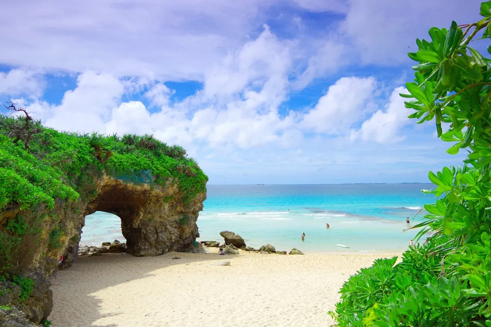
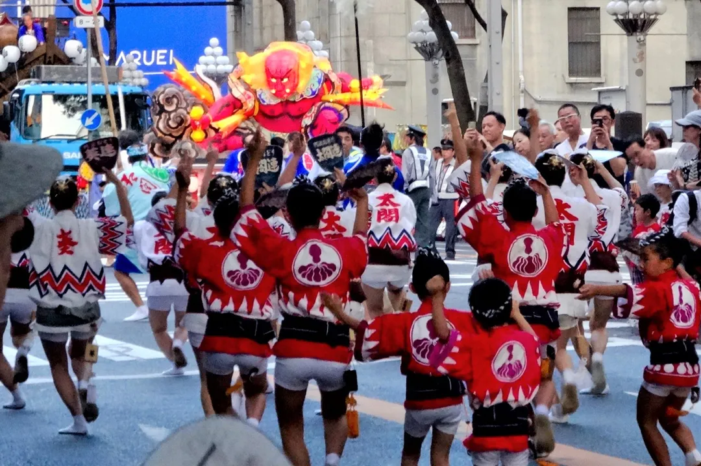
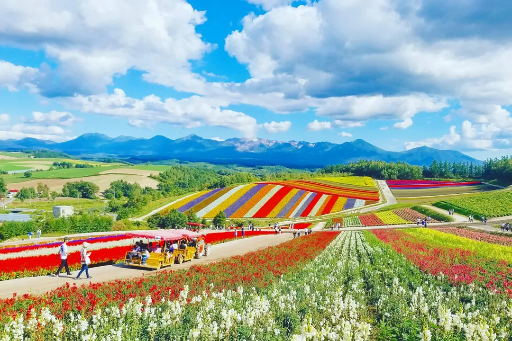
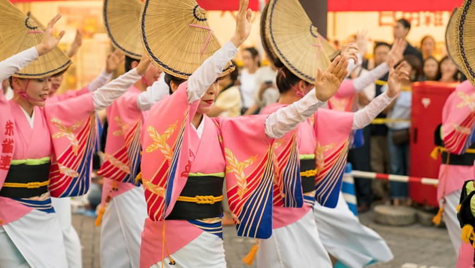
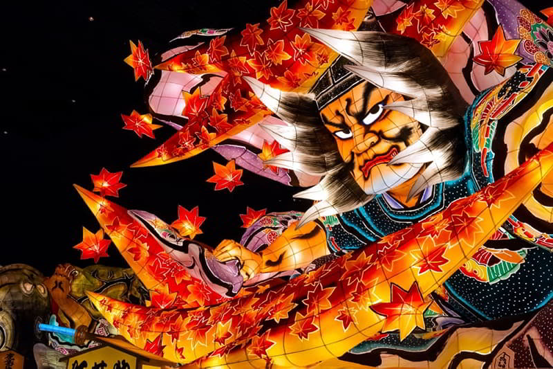
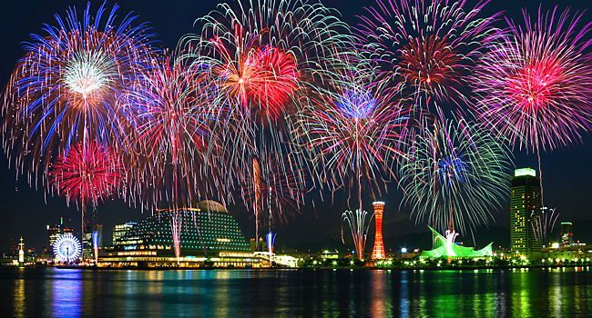

1. Okinawa

Vịnh Kabira thuộc Đảo Ishigaki là một trong những địa danh ngắm cảnh tuyệt vời mà bạn nhất định đến 1 lần trong đời, chỉ mất khoảng 40 phút lái xe ô tô từ Ishigaki để đến đây. Mọi thứ ở bãi biển Okinawa đều lung linh xinh đẹp như tranh vẽ trên những tấm bưu thiếp. Đến đây, bạn có thể dành cho mình những phút giây thư thái trên thuyền kính và ngắm nhìn từng rạn san hô màu sắc, những chú cá nhiệt đới bơi lội tung tăng dưới đáy đại dương trong suốt và nhìn thấy dải cát trắng dài mịn màng, tinh khiết. Nói đến hè thì chắc chắn không thể bỏ qua việc tắm biển và bãi biển ở đây sẽ cho bạn cảm giác vô cùng khác biệt so với những bãi biển bạn đã từng đi trước đây.
Website: #
2. lễ hội mùa hè Natsu Matsuri

Bạn sẽ không được xem là đã đến Nhật Bản trong mùa hè nếu bỏ qua các lễ hội tươi vui, đình đám của người dân bản địa như Lễ hội Natsu Matsuri được. Đây là khoảng thời gian bạn có thể hoàn toàn hòa mình vào nét văn hoá đặc biệt và những điệu nhảy đặc trưng Bon odori, mang đậm bản sắc văn hóa Nhật. Ngoài ra, du khách còn được tham gia vào các trò chơi như bắt cá vàng, bắn súng hay thưởng thức những đĩa mì xào thơm ngon cùng các món ăn thú vị như chuối phủ socola, bắp rang nướng, v.v... Lễ hội này tổ chức vào mùa hè diễn ra từ tháng 3 đến tháng 7 ở hầu hết các thành phố ở Nhật nên nếu có dịp thì hãy đến và trải nghiệm qua những trò chơi truyền thống vô cùng thú vị nhé.
Website: #
3. Bieu - Furano phía Bắc Hokkaido

Một trong những địa điểm đẹp và chất, đáng để bạn quan tâm khi đến Nhật Bản mùa hè đó là Biei-Furano tại Bắc Hokkaido. Với khí hậu ôn hoà, dễ chịu trong nền nhiệt độ tầm khoảng 20 độ C và khung cảnh cánh đồng hoa oải hương thơm ngát trải dài, nở rộ tại trang trại Tomita - Furano sẽ khiến du khách ngất ngây ngay từ lần đầu trông thấy. Ngoài ra, bạn còn có thể mua được các thức quà lưu niệm được làm từ hoa oải hương mang về cho gia đình, bạn bè.
Website: #
4.Lễ hội Awa Odori Matsuri

Lễ hội này là một phần của nghi lễ Obon trong Phật giáo để chào đón những linh hồn của người chết. Nó có ý nghĩa tượng trưng là cuộc hội ngộ gia đình, là khi linh hồn của tổ tiên quay về thăm bàn thờ gia đình. Được tổ chức xuyên suốt 500 năm, Awa Odori đã trở thành một trong những lễ hội mùa hè nổi tiếng nhất trong cả nước. Cứ mỗi tối, đường phố nhộn nhịp với âm thanh của trống, shamisen (một nhạc cụ truyền thống giống như đàn guitar ba dây), và nhiều nhạc cụ khác. Các vũ công Bon-Odori sẽ đội mũ rơm và mặc yukata.
Thời gian diễn ra lễ hội: Hàng đêm, từ ngày 12 đến ngày 15 tháng 8.
Địa điểm: Tokushima, trong vùng Shikoku.
Website: #
5. Lễ hội Aomori Nebuta Matsuri

Được coi là một trong ba lễ hội nổi tiếng nhất của Nhật Bản. Lễ hội Nebuta đã được UNESCO công nhận là một trong những “Di sản văn hóa phi vật thể thế giới”. Trong thời gian diễn ra lễ hội, những chiếc kiệu đèn lồng khổng lồ 3D nhiều màu sắc được diễu hành trên phố. Vào ngày cuối cùng của lễ hội, đừng bỏ lỡ màn bắn pháo hoa tuyệt đẹp kéo dài hai giờ khép lại các hoạt động lễ hội. Người ta cho rằng lễ hội mùa hè này có nguồn gốc từ Lễ hội Tanabata, bắt nguồn từ Trung Quốc hồi những năm 700.
Thời gian diễn ra lễ hội: Các đêm từ ngày 2 đến ngày 7 tháng 8.
Địa điểm: Aomori, tỉnh Aomori
Website: #
5. Lễ hội pháo hoa

Nhật Bản pháo hoa không chỉ có vào dịp tết, mà đặc biệt lễ hội pháo hoa tổ chức vào khoảng cuối tháng 7 đầu tháng 8 hàng năm còn là dịp để người dân khắp nơi trên cả nước có dịp nghỉ ngơi và vui chơi Lễ hội pháo hoa hay còn gọi là “hanabi” là hoạt động lễ hội được tổ chức vào dịp giữa năm , thường diễn ra ở khắp nơi trên đất nước Nhật, khu vực có lễ hội lớn nhất là ở ven sống Sumida chạy ngang khu dân cư ở Tokyo về phía Đông, đây là địa danh thu hút nhiều người xem và vui chơi nhất. Mỗi năm khoảng 2 vạn quả pháo hoa thu hút hơn 900 nghìn người xem với nhiều hình thù màu sắc khác nhau.
Thời gian diễn ra lễ hội: cuối tháng 7 đầu tháng 8 hàng năm.
Địa điểm: Toàn cầu
Website: #